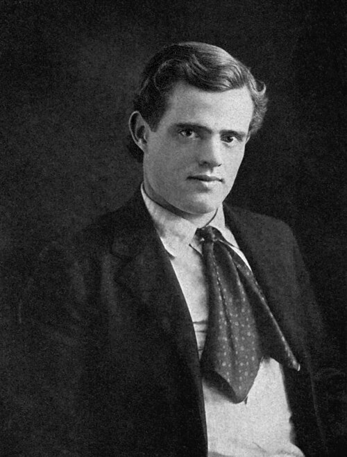

Jack London
Selviytyminen vaatii voimaa, mutta myös luottamusta.
London vie lukijan kylmään, nälkään ja liikkeeseen. Eläimen näkökulmasta ihmisen valta näyttää vuoroin julmalta, vuoroin suojelevalta.
Etsi teokset kirjastostaElämä ja teokset
Jack London oli yhdysvaltalainen kirjailija ja toimittaja. Hänestä tuli varhain kansainvälisesti menestynyt ammattikirjailija. Hänen tuotannossaan pohjoiset erämaat vuorottelevat kaupunkien, merimatkojen ja yhteiskunnallisten ristiriitojen kanssa.
Erämaan kutsu ja Valkohammas kuuluvat Londonin tunnetuimpiin teoksiin. Ne tarkastelevat eläimen ja ihmisen suhdetta eri suunnista. London kirjoitti myös työväen oloista ja vallasta sekä novelleja, joissa selviytymisen mahdollisuudet ovat hyvin vähäiset.
Tyyli ja teemat
Kerronta etenee toiminnan, aistimusten ja seurausten kautta. Ympäristö ei ole pelkkä tausta: kylmä, ruoka ja voimasuhteet ohjaavat jokaista päätöstä. Kovuus ei silti sulje pois kiintymystä, joka voi muuttaa eläimen suhteen koko maailmaan.
Luonto · Selviytyminen · Luottamus
Aloita tästä
Erämaan kutsu
Buck-koira joutuu vetokoiraksi pohjoisen ankaraan maailmaan. Tiivis seikkailu vaiston, sopeutumisen ja vapauden voimasta.
Valkohammas
Villin luonnon kasvatti oppii ihmisten vallan ja vähitellen myös luottamuksen. Eläimen kasvutarina väkivallasta, hoivasta ja kesyttämisestä.
Vertaa, millaisissa tilanteissa henkilöt turvautuvat pakkoon ja milloin luottamus alkaa rakentua.